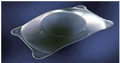
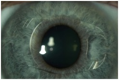

Phakic IOLs (intraocular lenses) are an alternative to LASIK and PRK eye surgery for correcting moderate to severe myopia (nearsightedness), and in some cases produce better and more predictable vision outcomes than laser refractive surgery. (Phakic means An eye that still has its natural lens. When an eye is aphakic, usually the lens has been removed during cataract or other eye surgery)
Phakic IOLs are clear implantable lenses that are surgically placed either between the cornea and the iris (the colored portion of your eye) or just behind the iris, without removing your natural lens. Phakic lenses enable light to focus properly on the retina for clearer vision without corrective eyewear.
Implantable lenses function like contact lenses to correct nearsightedness. The difference is that phakic IOLs work from within your eye instead of sitting on the surface of your eye.
High myopia, ineligible for LASIK
LASIK currently is the most popular type of refractive surgery in the United States. It is safe and effective, and technology advances such as custom LASIK and bladeless LASIK have made visual outcomes even better.
But not everyone is a good candidate for LASIK surgery. Potential reasons for not being a good LASIK candidate include: having too much nearsightedness, farsightedness or astigmatism; having an unusually thin or irregularly shaped cornea; and having eye conditions such as keratoconus or dry eye syndrome.
For many people who are outside the treatment range of LASIK, phakic intraocular lenses can produce excellent results.
One recent study that evaluated LASIK versus phakic IOL surgery for the correction of -6.00 to -20.00 D of myopia revealed that the two procedures produced essentially equal odds of attaining 20/20 vision without corrective lenses one year after surgery.
The study also found that patients who underwent phakic IOL implantation had better contrast sensitivity and were more satisfied with their outcome than LASIK patients. Neither technique caused significant complications that permanently affected vision.
 
Common to all ocular procedures there are concerns for inflammation, infection, and bleeding resulting from surgical trauma especially to the iris. Since these procedures entail larger cornea and sclera incisions, the risk of endophthalmitis and retinal detachment are notable risks. With the insertion of an artificial prosthetic in or near the angle elevated intraocular pressures from pupil block and angle scarring are concerning. Therefore, sizing of the prosthetic is critical for a good fit that induces little collateral damage to surrounding ocular structures. In extreme circumstances high intraocular pressures for extended periods of time can lead to permanent vision loss. Chronic intraocular pressure elevation can produce indolent vision damage from angle closure glaucoma. The surgical procedure itself also induces some endothelial cell damage and if the prosthetic is in close proximity to the cornea, chronic loss could be induced. Finally, chronic inflammation or prosthetic-lens touch can induce cataract formation.